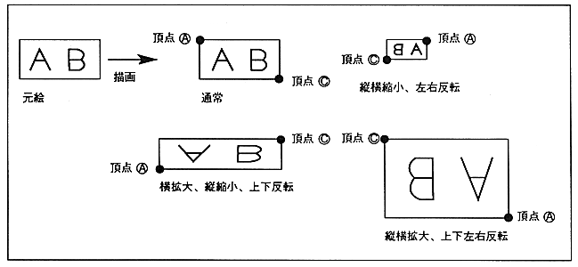

When specifying two coordinates, specify the coordinates of the two points for drawing the upper left and lower right vertices of the character pattern.
The drawing direction (character drawing direction) is determined by the position of the lower right coordinate relative to the specified upper left coordinate. The character pattern is drawn from the upper left coordinates to the lower right coordinates.
When the X value of the lower right coordinate is smaller than the X value of the upper left coordinate, it is drawn horizontally reversed. When the Y value of the lower right coordinate is smaller than the Y value of the upper left coordinate, it is drawn upside down. .
¡Reversal can be specified in the readout direction as well as regular sprites. If you flip it upside down at the coordinates and flip it upside down in the readout direction, the inversion is canceled and the upside down designation becomes invalid.
Figure 1.3 Rectangle Sprite (Specify 2 points)
